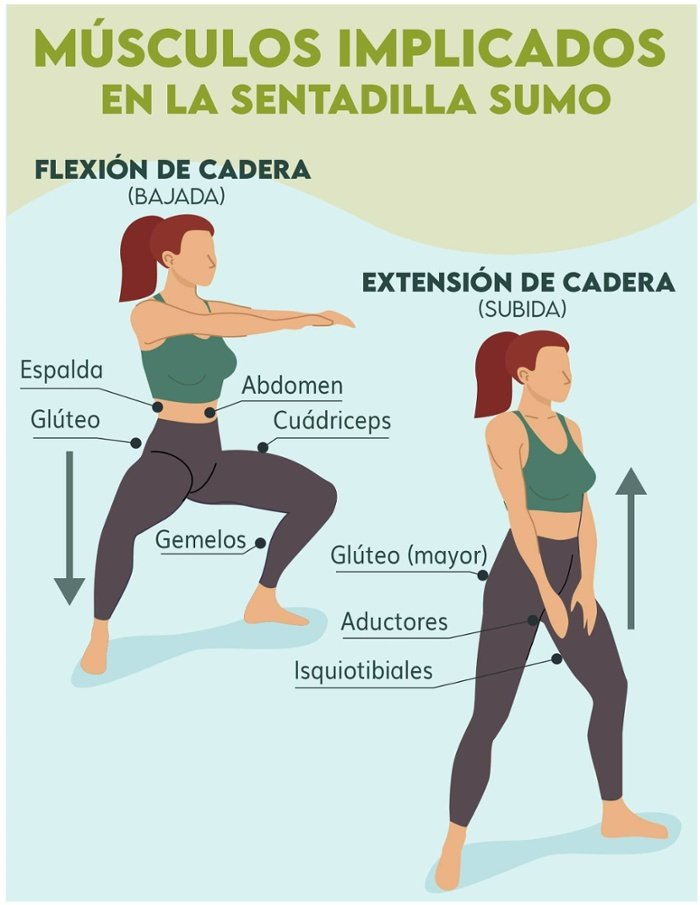

Técnica · En casa · 9 de junio de 2021
Sentadilla sumo con autocarga
Sentadilla sumo
La sentadilla sumo es un ejercicio fundamental para fortalecer el tren inferior, ideal tanto para principiantes como para deportistas avanzados. Con o sin pesas, este movimiento involucra múltiples grupos musculares, lo que lo convierte en un pilar de cualquier rutina de entrenamiento.
A diferencia de la sentadilla clásica, la sentadilla sumo se caracteriza por una postura más amplia, con los pies separados más allá del ancho de los hombros y las puntas de los pies giradas hacia afuera, imitando la posición inicial de un luchador de sumo. Cuando se realiza correctamente, este ejercicio no solo mejora la fuerza, sino también la estabilidad y la movilidad.
Beneficios de la sentadilla sumo
Este ejercicio trabaja de manera integral los músculos del tren inferior, incluyendo:
- Cuádriceps: Potencian la extensión de las rodillas.
- Glúteos (máximo y medio): Claves para la estabilidad de la cadera.
- Músculos aductores (muslos internos): Se activan intensamente debido a la postura amplia.
- Isquiotibiales y pantorrillas: Contribuyen al equilibrio y la potencia.
- Core (abdomen y lumbares): Se fortalecen al mantener la postura correcta.
Es apto para la mayoría de las personas, siempre que no existan lesiones previas o limitaciones de movilidad en caderas o rodillas. Además, mejora la flexibilidad de la cadera y puede adaptarse a diferentes niveles de condición física.
Ejecución técnica paso a paso
- Posición inicial:
- Colócate de pie con las piernas separadas más allá del ancho de los hombros.
- Gira las puntas de los pies hacia afuera, formando un ángulo de aproximadamente 45º.
- Mantén la espalda recta, los hombros relajados hacia atrás y el pecho elevado. La mirada debe estar al frente para mantener la columna neutra.
- Descenso:
- Empuja las caderas hacia atrás, como si fueras a sentarte en una silla imaginaria.
- Flexiona las rodillas, asegurándote de que permanezcan alineadas con los pies y no se desplacen hacia adentro.
- Baja hasta que tus muslos estén al menos paralelos al suelo o hasta donde tu movilidad lo permita, manteniendo los talones firmes en el suelo.
- Ascenso:
- Contrae los glúteos y empuja desde los talones para volver a la posición inicial, extendiendo las rodillas sin bloquearlas.
- Mantén el abdomen activado durante todo el movimiento para proteger la zona lumbar.
- Respiración:
- Inhala profundamente al bajar.
- Exhala con control al subir, liberando el aire al llegar a la posición inicial.
Consejos para una ejecución segura
- Evita errores comunes: No dejes que las rodillas se cierren hacia adentro ni que superen la punta de los pies. Mantén los talones siempre en contacto con el suelo.
- Adapta la intensidad: Si eres principiante, comienza con el peso de tu cuerpo. Con el tiempo, puedes incorporar pesas rusas (kettlebells), mancuernas, barras o bandas elásticas para aumentar la dificultad.
- Progresión: Inicia con 2 series de 10-12 repeticiones. A medida que ganes fuerza, aumenta a 3-4 series o añade peso, siempre respetando los límites de tu cuerpo para evitar lesiones.
- Variaciones: Para intensificar el ejercicio, prueba mantener la posición baja durante unos segundos o realiza pequeños rebotes controlados (isométricos) antes de subir.
Recomendaciones finales
La sentadilla sumo es un ejercicio versátil que puedes incluir en rutinas de fuerza, tonificación o movilidad. Escucha a tu cuerpo, prioriza la técnica sobre el peso y, si tienes dudas o molestias, consulta a un entrenador o fisioterapeuta. Con práctica constante, notarás mejoras en tu fuerza, estabilidad y confianza en el entrenamiento.
